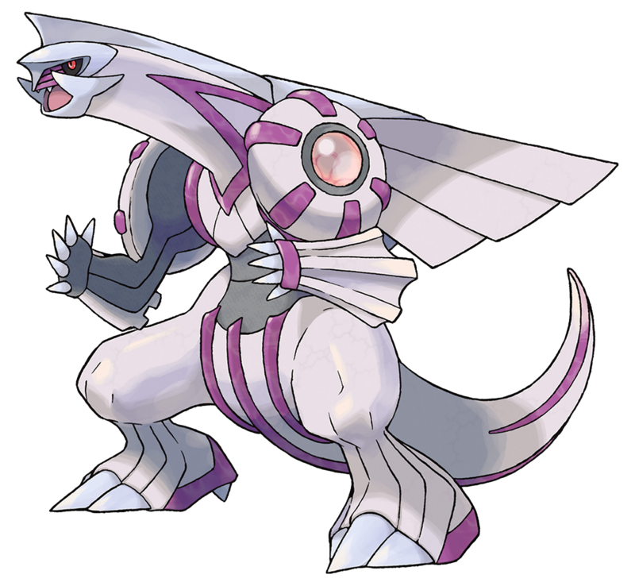

Los pokemones proximos a presentar son los Legendarios y Miticos de la region de Sinnoh, originarios de la 4°Generacion de los juegos de Pokemon son los pokemones con mayor relevancia de esa Region estando entre ellos el Pokemon Creador "Arceus".
| Pokemon | Nombre | Tipo | Habilidades | Movimientos | Obtencion del Pokemon: |
|---|---|---|---|---|---|
| Dialga | Acero/Dragon | Presion |
|
Se optiene al final de la aventura principal de pokemon Diamante. | |
|  | Palkia | Agua/Dragon | Presion |
|
Se obtiene al final de la aventura principal de pokemon Perla. |
| Giratina | Fantasma/Dragon |
|
|
Se obtiene al final de la aventura principal de pokemon Platino. | |
| Uxie | Psiquico | Levitacion |
|
Despues de salir del mundo distorcion, ve a pueblo arena y habla con el profesor Serbal.Ahora se encontrara en la caberna agudesa, en el lago agudesa. | |
| Mesprit | Psiquico | Levitacion |
|
Es un pokemon errante: en cualquier lugar de Sinnoh despues del encuentro de la caverna Veraz. | |
| Azelf | Psiquico | Levitacion |
|
Despues de salir del mundo distorcion, ve a pueblo arena y habla con el profesor Sebal. Ahora se encontrara en la caverna Valor en el Lago Valor. | |
| Regigigas | Normal | Inicio Lento |
|
|
|
| Heatran | Fuego/Acero | Absorbe Fuego |
|
Se consigue en estado salvaje una vez obtenida la pokedex Nacional y al Llegar a la montaña dura. | |
| Cresselia | Psíquico | Levitacion |
|
Se consigue en estado salvaje como un pokemon errante aleatoriamente por todo Sinnoh. | |
| Phione | Agua | Absorbe Agua |
|
|
|
| Manaphy | Agua | Absorbe Agua |
|
Se obtiene transfiriendo el Huevo de Manaphy de cualquier juego de pokemon Ranger. | |
| Shaymin | planta | Cura Natural |
|
Tranferir de pokemon Ranger. Trasos de luz tras completar la mision rescata al shaymin perdido. | |
| Darkrai | Siniestro | Mal sueño |
|
|
|
| Arceus | Normal | Multitipo |
|
Repartido por evento. |